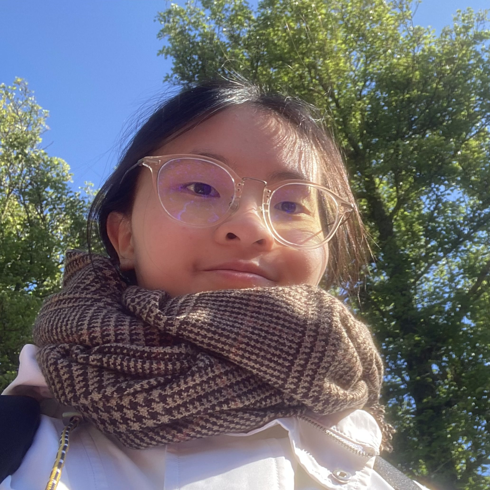

Hello! I am a third year CS undergrad at the University of Toronto. I also pursue a physics major and a mathematics minor. Feel free to contact me if you want to collaborate!
My research interests generally lie in healthcare/biotech \(\times\) {graphics, vision, machine learning}. Previously, I worked on skin flap surgery simulations at MEDCVR. I am currently working on algorithms to cater diverse human preferences in reinforcement learning from human feedback (RLHF) at Vector Institute. I am also part of the Wearipedia team for wearables from Snyder Lab based in Stanford.
Wenzhangzhi Guo, Allison Tsz Kwan Lau, Joel C. Davies, Vito Forte, Eitan Grinspun, Lueder Alexander Kahrs
Full paper @ EG VCBM 2024 (Eurographics Workshop on Visual Computing for Biology and Medicine)
We explored the suturing of a rhomboid cut on 3D rhomboid skin flap meshes and the optimal undermining regions using finite element method simulation and provided recommendations on the most optimal undermining region for rhomboid flaps.
We create a common interface to extract wearable data to simplify data extraction for clinical researchers.
We added an adative term for the decay rates in Adam and tested the performance of a modified Adam’s optimizer on artificial landscape and several experiments following Adam’s paper.
When I am not sitting in front of the computer, I enjoy the outdoors, or reading, or watching Netflix/YouTube. I’m passionate about learning. I love marine animals, especially marine mammals and octopuses. I have worked on various tasks, from 3D modeling to machining to video editing. One thing I’ve come to realize is that learning is never wasted! Most recently, I am interested in the book: Origami design secrets : mathematical methods for an ancient art